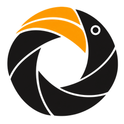
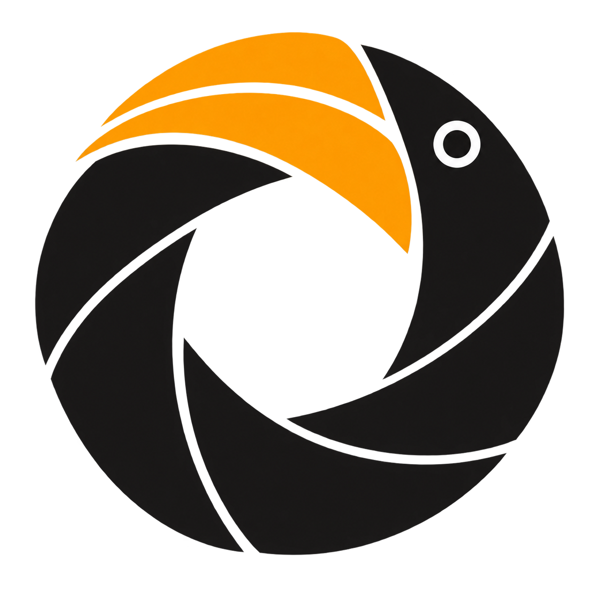
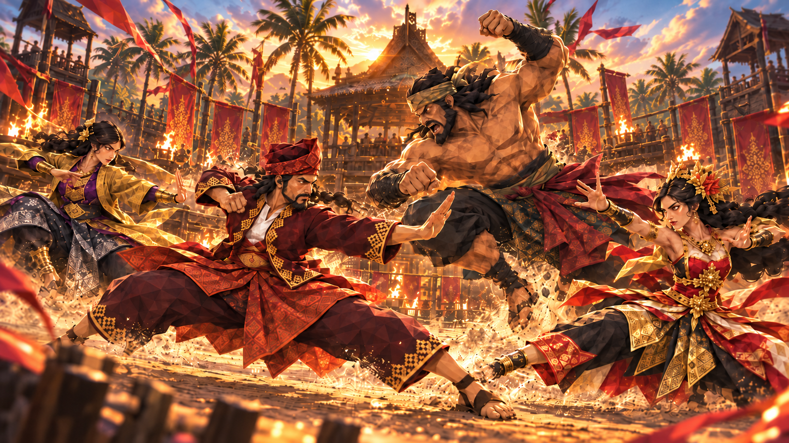
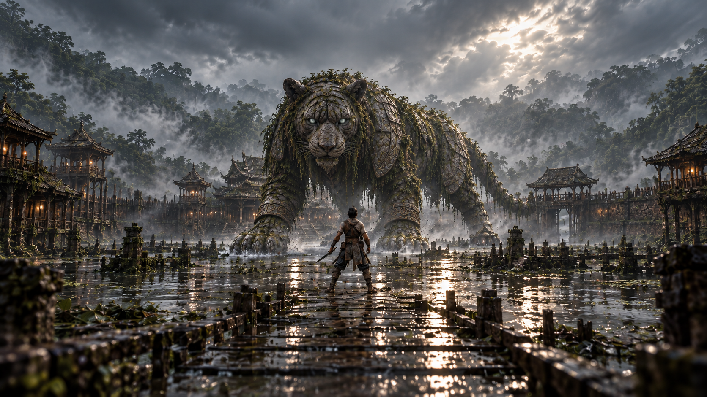

Vision
A future where Malaysia is internationally recognised for distinctive, world-class games rooted in its own cultural identity.

کڽالڠکو

کڽالڠکوKenyalangKu00 — THE BEGINNING
AN INDEPENDENT GAME STUDIO
MALAYSIA / OPEN TO THE WORLD
کڽالڠکو
Rooted in culture.
Driven by imagination.
05 CHAPTERS / ONE CONTINUOUS JOURNEY
01 — OUR ROOTS / WHO WE ARE
We are KenyalangKu. An independent Malaysian game studio, beginning with the stories closest to home.
Heritage, mythology, landscapes, and imagination are our starting points. We turn them into experiences that invite people everywhere to be curious about Malaysia.
SyahmirFOUNDER & GAME CREATOR
IDENTITY IS WHERE THE JOURNEY BEGINS.
02 — OUR VISION / WHY WE EXIST
A future where Malaysia is internationally recognised for distinctive, world-class games rooted in its own cultural identity.
Create culturally rooted Malaysian games for global audiences, develop local creative talent, and connect Malaysian culture with the international games industry.
Culture through play: transform heritage, mythology, landscapes, and imagination into interactive experiences that encourage curiosity about Malaysia.
LOCAL IDENTITY / GLOBAL IMAGINATION
03 — OUR WORLDS / ORIGINAL GAME IP
Two worlds in development.
One belief in what Malaysian games can become.

01 / FIRST PROOF · IN DEVELOPMENT PUSAKAOur first proof in development: an online multiplayer Silat fighting game with deliberate, player-driven combat shaped by Malaysian martial heritage, tactical footwork, and precise timing.
PROJECT ARTWORK · IN DEVELOPMENT MORE DETAILS
02 / FLAGSHIP PROJECT · IN DEVELOPMENT MYTH: TANAHA fantasy action-adventure shaped by Malaysian-inspired mythology, mysterious landscapes, and the stories held within them. Early worldbuilding includes Aras and the places around him.
PROJECT ARTWORK · IN DEVELOPMENT MORE DETAILSORIGINAL WORLDS / BUILT WITH INTENTION
04 — CONTACT / AFTERLIGHT
کڽالڠکو
Rooted in Kuching. Always open to a good conversation.
OPEN CONTACT PAGEIllustrated mode · The complete story remains available.